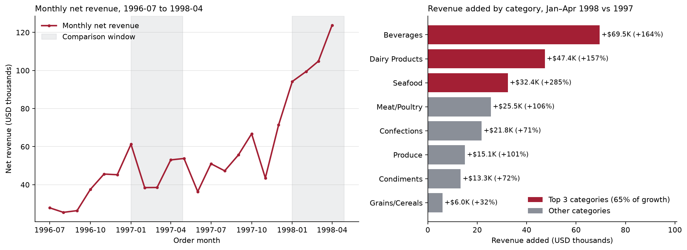
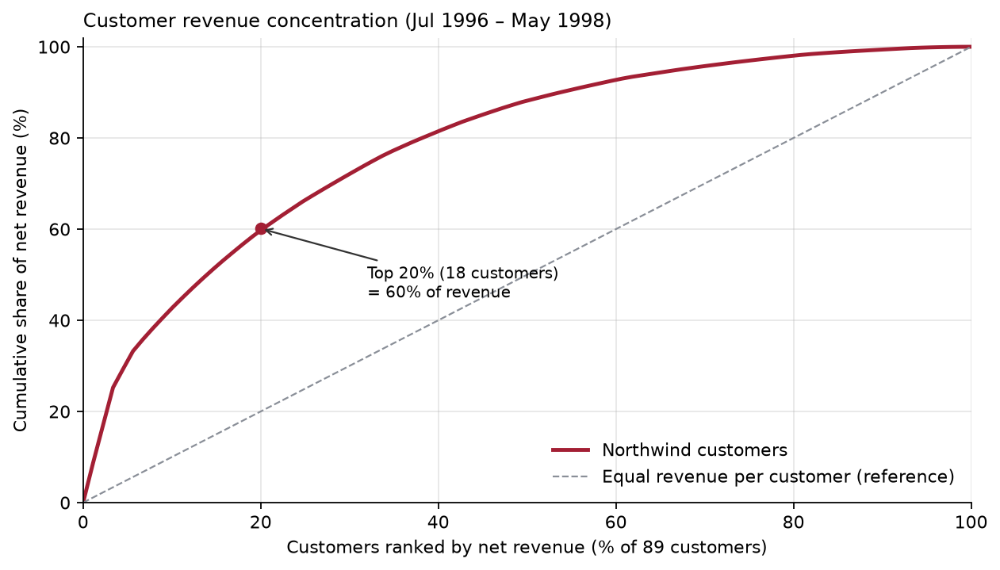
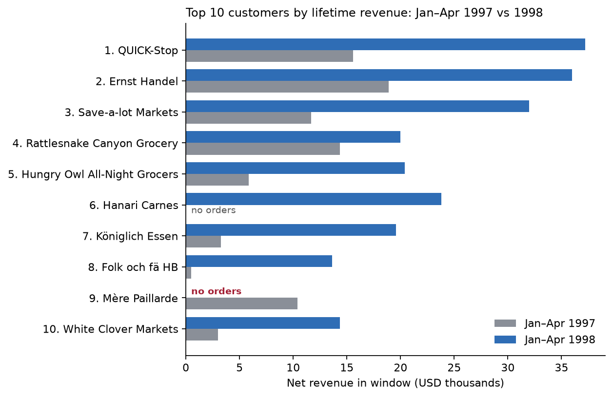
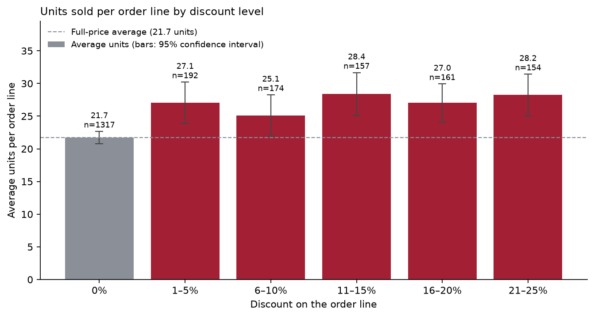
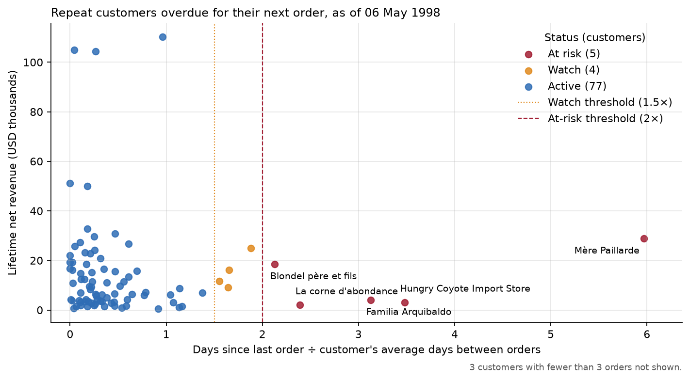

15.561 Digital Revolution · Business analysis
Northwind Traders: where growth comes from, and what puts it at risk
Four questions for the sales and operations leadership of Northwind Traders, answered with the company's own order data.
Northwind Traders is a specialty food distributor that sells to grocery stores, restaurants, and importers. The dataset covers 830 orders (2,155 order lines) from 89 customers in 21 countries, placed between 4 July 1996 and 6 May 1998, across 77 products in 8 categories. Over that period the company booked $1.27 million in net revenue.
This page is written for a sales or general manager deciding where to put inventory, attention, and pricing effort next quarter. Each section states the question, why it matters, how it was answered, the evidence, and a concrete recommendation.
The short version
- Revenue more than doubled (+121%), and three categories (Beverages, Dairy, Seafood) delivered 65% of the growth.
- 18 customers (20%) bring in 60% of revenue; the top 3 alone bring in 25%. One top-10 account has gone silent.
- A 1–5% discount sells as many units as a 25% discount. Discounts above 5% gave away $58K with no extra volume.
- Nine repeat customers are overdue for their next order. Together they spent $77K in 1997.
Where is revenue growth coming from, and where should we put inventory and supplier capacity?
Why it matters
Revenue is climbing fast. If the categories driving that growth run out of stock or their suppliers can't keep up, the growth stalls. A manager needs to know which categories to secure supply for first.
Analytical approach
We added up sales by month and by product category, then compared January–April 1998 with the same months of 1997. Categories are ranked by how many dollars they added.

Main finding
Net revenue for January–April rose from $191,322 in 1997 to $422,290 in 1998 (+120.7%). Every category grew, but Beverages (+$69.5K, +164%), Dairy Products (+$47.4K, +157%) and Seafood (+$32.4K, +285%) produced 65% of the increase. Grains/Cereals grew least (+$6.0K, +32%).
Business implication
Recommendation: lock in supply for Beverages, Dairy and Seafood before the next quarter. Negotiate volume commitments with those categories' suppliers and raise their reorder levels so stock-outs don't cap growth. Review Grains/Cereals for range or pricing problems before putting more inventory behind it.
How dependent are we on a few customers, and are those key accounts growing or slipping?
Why it matters
If a few customers carry the business, losing one is a serious hit to revenue. Knowing how concentrated revenue is tells a manager where account-management time is worth the most, and spotting a key account that is slipping gives time to act.
Analytical approach
We ranked customers by total sales and measured what share of revenue the biggest ones bring in. For the top 10, we compared January–April 1998 with the same months of 1997.


Main finding
The top 20% of customers (18 of 89) bring in 60.1% of net revenue, and 34 customers make up 80%. The top three, QUICK-Stop ($110K), Ernst Handel ($105K) and Save-a-lot Markets ($104K), bring in 25.2% between them, about 8% each. Nine of the top 10 grew in Jan–Apr 1998. The exception is Mère Paillarde (#9, $28.9K lifetime): $10.4K in Jan–Apr 1997, no orders at all in 1998.
Business implication
Recommendation: set up a key-account program for the top 3 customers: a named account manager, quarterly business reviews, and priority allocation of fast-growing stock. Any one of them leaving would cost about 8% of revenue. Call Mère Paillarde this week to find out why they stopped ordering (see Q5).
Do discounts actually sell more, or do they just give away revenue?
Why it matters
39% of order lines carry a discount, of up to 25%. Every discount point comes straight out of revenue. If deeper discounts don't sell more units, a simple cap is the easiest revenue a manager will ever recover.
Analytical approach
We grouped order lines by discount size and compared the average units sold in each group. We also totaled how much revenue the discounts cost.

| Discount | Order lines | Avg units | Median units |
|---|---|---|---|
| 0% | 1,317 | 21.7 | 18 |
| 1–5% | 192 | 27.1 | 20 |
| 6–10% | 174 | 25.1 | 20 |
| 11–15% | 157 | 28.4 | 21 |
| 16–20% | 161 | 27.0 | 21 |
| 21–25% | 154 | 28.2 | 25 |
Main finding
Discounted lines do sell more: 27.1 units on average against 21.7 at full price (+25%). The lift holds within the same product (+4.6 units; 70% of products sell more when discounted). But the size of the discount barely matters: lines at 1–5% average 27.1 units, the same as lines above 5% (27.1). Discounts cost $88,666 in total (6.5% of gross revenue), and $58,484 of that is the portion above 5%, spread over 646 order lines.
Business implication
Recommendation: make 5% the standard maximum discount, and require manager approval for anything deeper. Based on this period, that would recover about $58K, or about 4.6% of net revenue, without losing volume. Run it as a one-quarter test with a few sales reps first and track units per order to confirm.
Which customers are we at risk of losing?
Why it matters
Customers rarely announce that they're leaving; they just stop ordering. Catching a customer who is overdue against their own usual ordering rhythm gives the sales team a chance to win them back before the account is lost.
Analytical approach
For each repeat customer, we compared how long it has been since their last order with how often they usually order. A customer who is more than twice as late as usual is at risk; 1.5 to 2 times late puts them on the watch list.

| Customer | Country | Status | Days since last order | Usual gap (days) | Overdue | 1997 revenue |
|---|---|---|---|---|---|---|
| Mère Paillarde | Canada | At risk | 188 | 32 | 6.0× | $23,332 |
| Blondel père et fils | France | At risk | 114 | 54 | 2.1× | $7,818 |
| Familia Arquibaldo | Brazil | At risk | 187 | 60 | 3.1× | $3,127 |
| Hungry Coyote Import Store | USA | At risk | 240 | 69 | 3.5× | $2,283 |
| La corne d'abondance | France | At risk | 43 | 18 | 2.4× | new in 1998 |
| Berglunds snabbköp | Sweden | Watch | 63 | 34 | 1.9× | $13,849 |
| Folies gourmandes | France | Watch | 135 | 87 | 1.6× | $11,667 |
| Seven Seas Imports | UK | Watch | 91 | 55 | 1.7× | $9,021 |
| Victuailles en stock | France | Watch | 103 | 63 | 1.6× | $5,807 |
Main finding
5 repeat customers are at risk, together worth $56,569 in lifetime revenue and $36,561 in 1997. Another 4 are on the watch list ($40,344 in 1997), so about $77K of annual business is overdue. The standout is Mère Paillarde: it used to order every 32 days, but hasn't ordered in 188 days, and it was worth $23.3K in 1997. This is the same top-10 account that went silent in Q2.
Business implication
Recommendation: give this list to the sales team as a win-back campaign this month. Account managers should call the at-risk customers in order of 1997 revenue, starting with Mère Paillarde and Blondel père et fils, ask what changed (price, service, a competitor), and offer to restart with a first order at the standard ≤5% discount from Q3. Re-run the check monthly so that overdue accounts come up automatically.
Method, data quality and reproducibility
- Revenue =
UnitPrice × Quantity × (1 − Discount)per order line. It uses the price actually charged on each order, not today's list price, and excludes freight. - Cleaning: one freight value stored as text
(
"1,007.64") was converted to a number, and discount rounding noise (e.g. 0.0500000007) was rounded to 2 decimals. 21 recent unshipped orders are included in revenue. All keys and table joins were checked: no orphans, duplicates or impossible values. - Verification: each question is computed with SQL
(Python
sqlite3), then 15 key numbers are recomputed independently with pandas on the raw data. All 15 match. - Reproduce: all code is Python, in the
GitHub
repository.
python src/run_all.pydownloads the data, rebuilds every chart and table, and runs the verification.